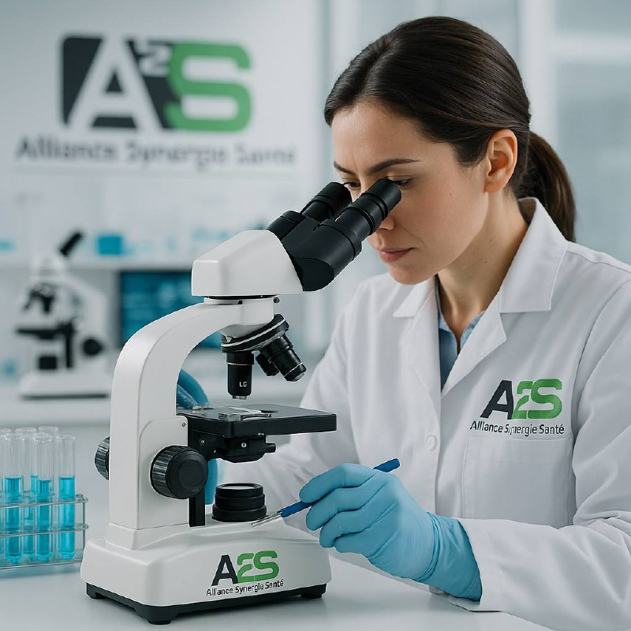

L’alliance qui rend la santé accessible, personnalisée et responsable
Alliance Synergie Santé n’est pas seulement un laboratoire ou un distributeur :
c’est un écosystème de solutions humaines au service de la vitalité et du bien-être,
repensant la façon d’accompagner chaque patient et professionnel.

Des parcours de soins créatifs
Diagnostics personnalisés en ligne ou en cabinet, solutions co-créées avec des praticiens passionnés et des patients engagés.
Des gammes “vivantes”
Chaque produit incarne une histoire vraie, une innovation utile, un enjeu de santé ou de beauté qui concerne toute la famille, à tous âges.
Un engagement fort
Chaque formule, chaque service est pensé dans le respect de la planète, de l’inclusion et de la transparence — labels bio, choix des partenaires, et intégration de l’avis des utilisateurs.
Un pont entre science et sens
Nos équipes aiment mêler rigueur clinique et approche holistique, former, sensibiliser et innover avec exigence — jamais sans chaleur.
Pourquoi choisir Alliance Synergie Santé?
Parce que se soigner, ici, c’est collaborer à une aventure collective : celle d’une santé sur-mesure, éthique, évolutive, où l’humain et l’expertise vont toujours de pair.